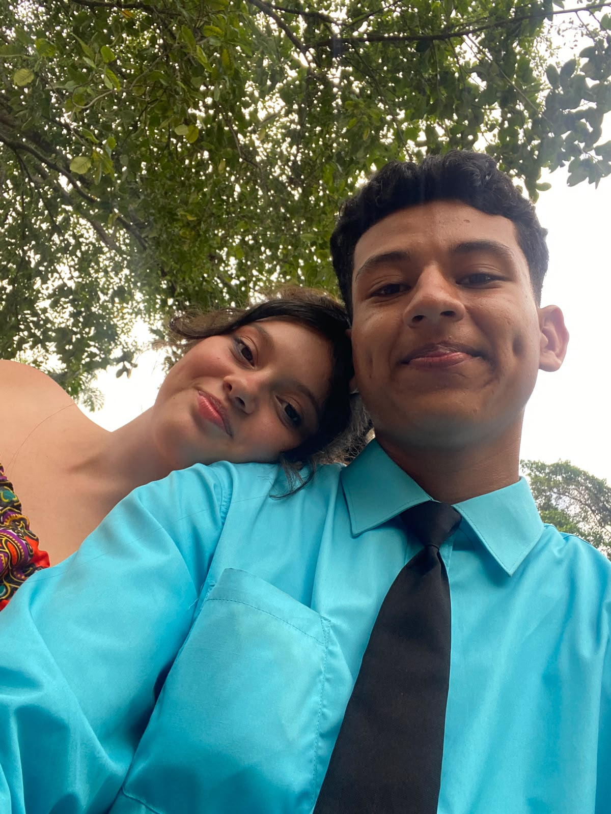
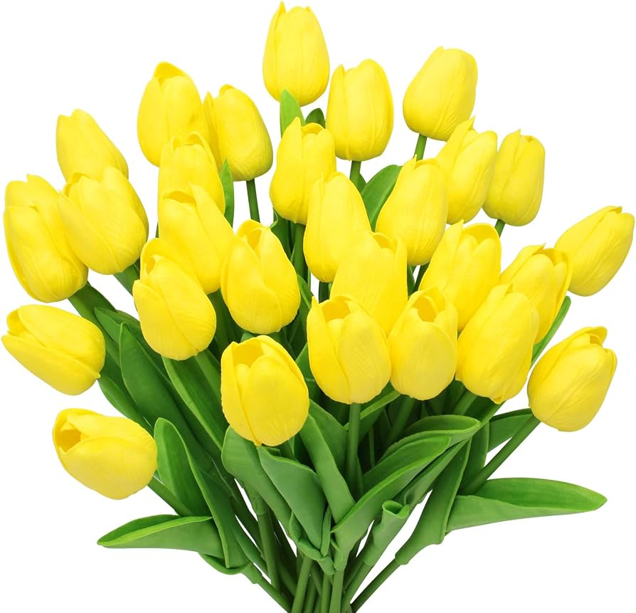
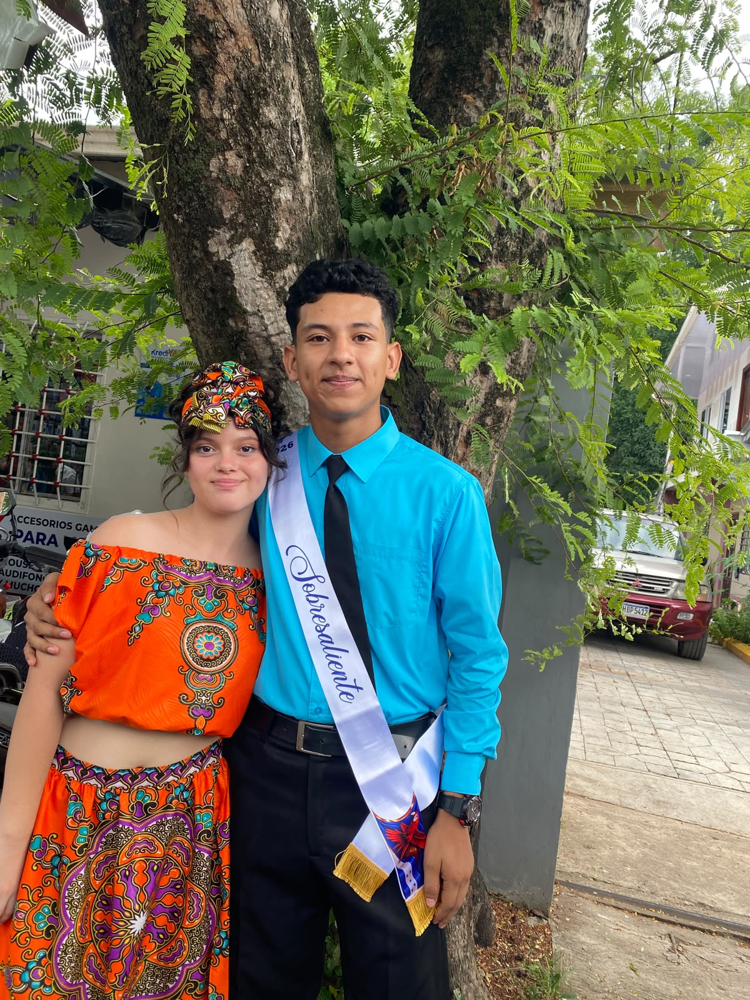
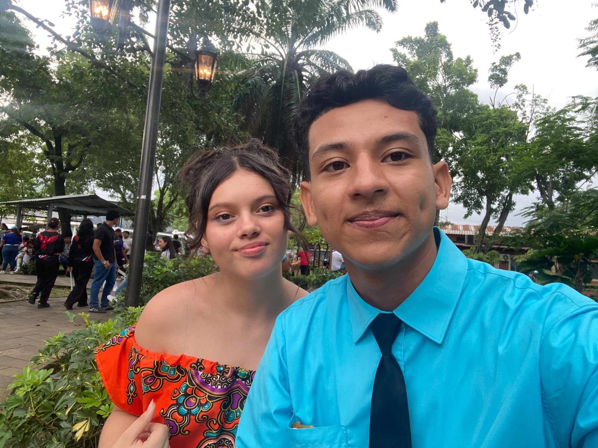
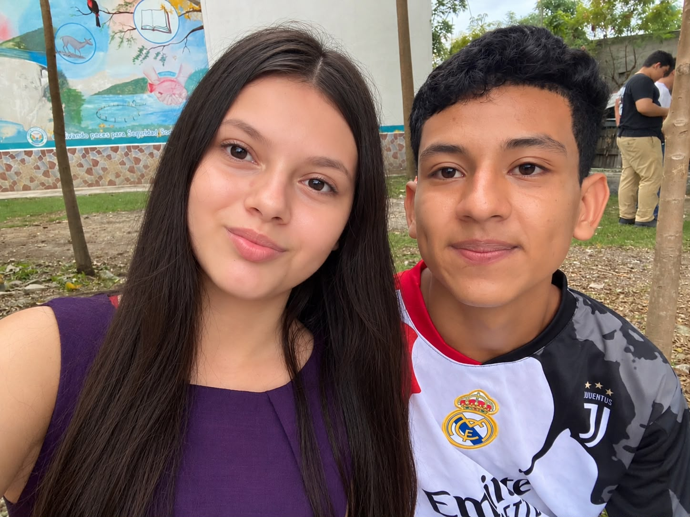
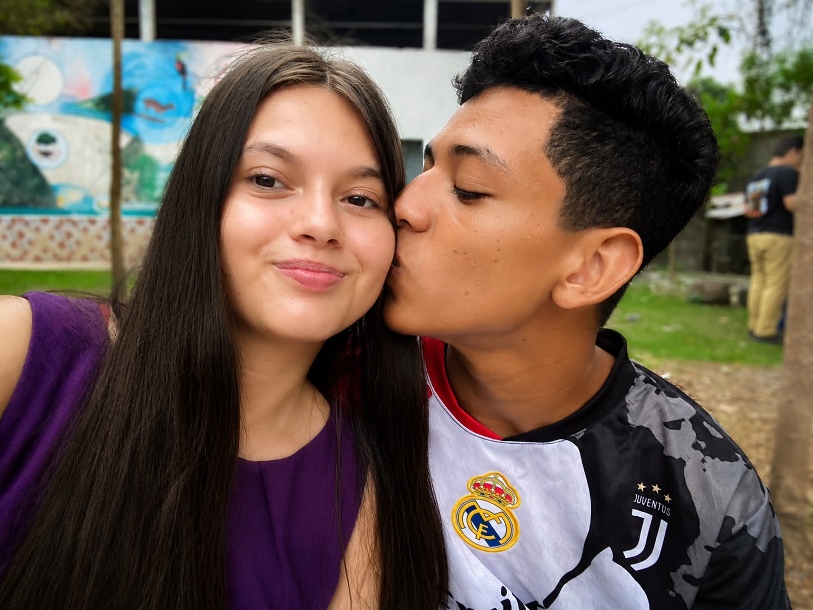
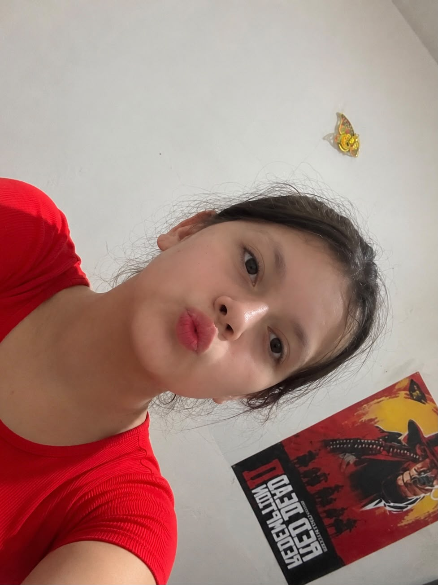

01
PARA LA PERSONA QUE AMO
Hay cosas que no siempre puedo decir con palabras, así que decidí hacerte esto.
21 DE SEPTIEMBRE
Pero también quiero regalarte algo que dure más que unas flores: un pequeño pedacito de todo lo que siento por ti.

ABRE MI CARTA
Para ti
Mi amor:
Hoy quisiera poder estar frente a ti, mirarte a los ojos y entregarte un ramo de flores amarillas con mis propias manos. Quisiera ver tu sonrisa en ese momento y decirte personalmente todo lo que estas palabras intentan decir.
Pero aunque hoy no pueda llevarte flores hasta tus manos, no quería dejar pasar este día sin hacer algo especial para ti. Por eso hice este pequeño rincón, para que por un momento estas flores puedan llegar hasta ti de una manera diferente.
Quiero que sepas que no elegí las flores amarillas solamente porque son bonitas. Las elegí porque me recuerdan a la alegría, a la luz y a esas pequeñas cosas que consiguen hacer bonito un día cualquiera.
Y cuando pienso en todo eso, inevitablemente pienso en ti.
Pienso en tu sonrisa, en nuestras conversaciones, en nuestros recuerdos y en cada momento que hemos compartido. Pienso en todas esas pequeñas cosas que quizá parecen simples, pero que para mí tienen un valor enorme porque llevan un pedacito de ti.
A veces siento que decirte "te quiero" no alcanza para explicar todo lo que siento. Porque quererte no está solamente en una palabra. Está en pensar en ti durante el día, en querer saber cómo estás, en sonreír cuando algo me recuerda a ti y en desear que tengas muchos motivos para sonreír.
Si pudiera regalarte una flor por cada vez que has hecho bonito uno de mis días, necesitaría un jardín entero.
Y si pudiera regalarte una por cada vez que he pensado en ti, probablemente tendría que llenar el mundo entero de flores amarillas.
Así que hoy quiero que recibas estas flores como si estuviera frente a ti entregándotelas una por una. Una por cada sonrisa, una por cada recuerdo, una por cada abrazo que nos debemos, una por cada momento que hemos vivido y una por todos los momentos que todavía nos quedan por vivir.
No sé qué nos traerá el futuro, pero sí sé que agradezco muchísimo cada momento que la vida me ha permitido compartir contigo.
Gracias por existir. Gracias por ser tú. Gracias por formar parte de mi vida y por hacer que tantos momentos tengan un significado especial para mí.
Hoy no pude llevarte flores hasta tus manos... así que hice que las flores vinieran hasta ti. 🌻
Espero que cuando veas este ramo recuerdes algo muy sencillo: hay alguien que pensó en ti, que quiso hacerte sonreír y que preparó todo esto con muchísimo cariño solamente para ti.
Feliz Día de las Flores Amarillas, mi amor.
Con todo mi corazón,
Yo ❤️
NUESTROS RECUERDOS
Cada fotografía guarda una pequeña parte de nuestra historia.






Y SI ME PREGUNTAS...
Podría darte mil razones, pero aquí van algunas.
PARA TI, MI AMOR
Sé que hoy no puedo estar ahí para entregarte un ramo con mis propias manos, pero no quería que este día pasara como cualquier otro.
No pude llevarte flores hasta tus manos...
así que hice que las flores
vinieran hasta ti. 🌻
21 DE SEPTIEMBRE